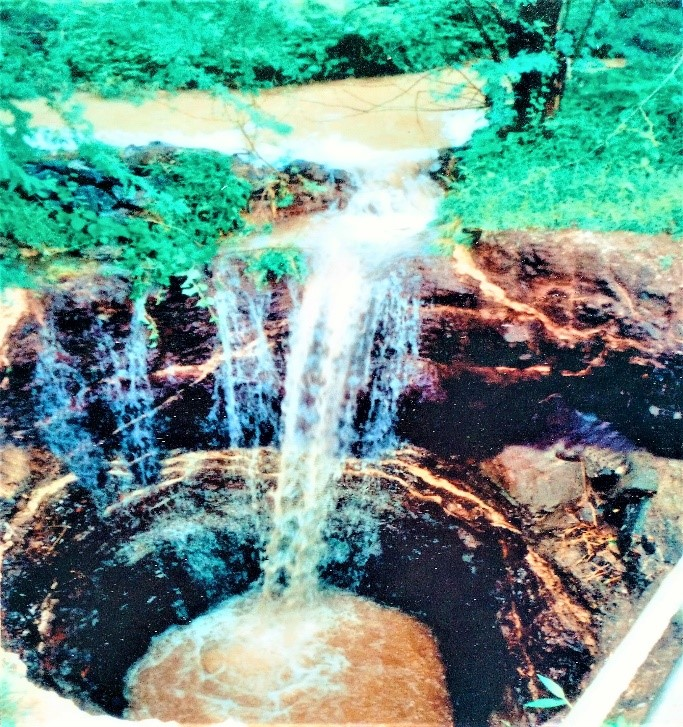
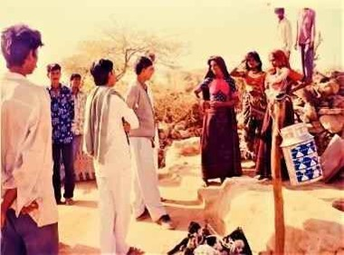
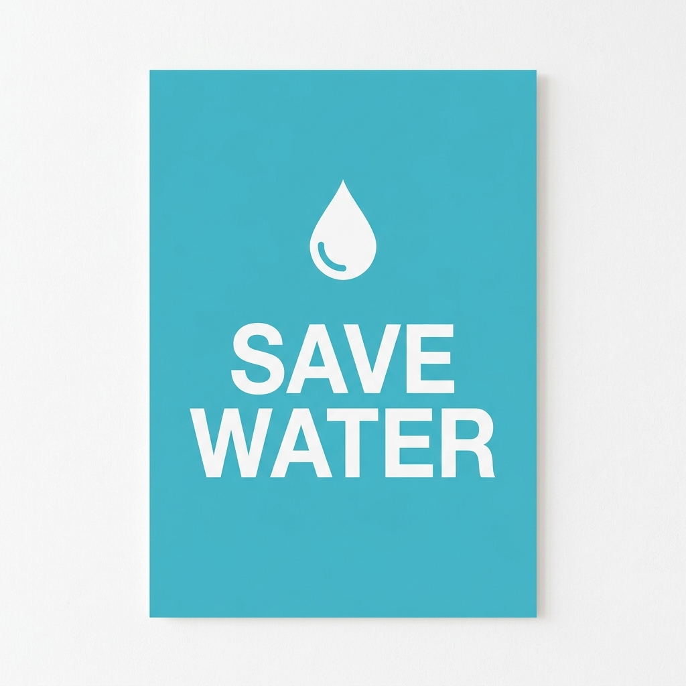

Introduction: Water scarcity is a major concern in Gujarat due to overexploitation of groundwater and limited surface water resources. To address this issue, Gujarat Rajya Gram Vikas Samiti has extensive expertise and experience in water-related projects, including the construction of more than 400 roof-top rainwater harvesting structures in the past. Building on this experience, we propose a new CSR project to promote sustainable water management practices in drought-prone regions of Gujarat.
Project Description: The proposed project aims to implement sustainable water management practices in selected areas of Gujarat by constructing roof-top rainwater harvesting structures, recharging groundwater aquifers, and rejuvenating wells. The project will involve constructing roof-top rainwater harvesting structures to collect and store rainwater from rooftops, which will be used for household purposes and to recharge groundwater aquifers. In addition, the project will involve the construction of recharge wells and rejuvenation of existing wells in the project areas. These wells will be designed to capture and store excess rainwater, which will replenish the groundwater table and ensure sustainable water availability during the dry season.
Impact: The proposed CSR project has the potential to address the critical issue of water scarcity in drought-prone regions of Gujarat. By implementing sustainable water management practices such as roof-top rainwater harvesting structures and well rejuvenation, the project will help to conserve water resources and promote sustainable water management practices. The project will have a positive impact on the lives of local communities by providing them with access to clean and safe water for household and agricultural purposes. Moreover, the project will also contribute to the socio-economic development of the region by promoting agricultural productivity, reducing the dependence on external water sources, and creating employment opportunities.
Conclusion: In conclusion, the proposed CSR project by Gujarat Rajya Gram Vikas Samiti to implement sustainable water management practices through rainwater harvesting and rejuvenation of wells in drought-prone regions of Gujarat builds on our extensive experience and expertise in water-related projects. The project will help to conserve water resources, promote sustainable water management practices, and have a positive impact on the lives of local communities. Moreover, the project will also contribute to the socio-economic development of the region by promoting agricultural productivity, reducing the dependence on external water sources, and creating employment opportunities.
Introduction: Water scarcity is a major challenge faced by rural communities in many parts of India. To address this issue, we propose a CSR project to construct check dams in selected rural areas to promote sustainable water management practices.
Project Description: The proposed project aims to construct check dams in selected rural areas to capture and store rainwater. Check dams are an effective solution to control soil erosion and improve water availability in the surrounding areas. The project will also involve community participation in the construction and maintenance of the check dams, which will help to build awareness and ownership among the local communities.
Impact: The proposed CSR project has the potential to have a significant impact on the lives of rural communities. By constructing check dams, the project will help to conserve water resources and promote sustainable water management practices. The project will also have a positive impact on agriculture productivity and livelihoods, as well as the overall socio-economic development of the region.
Conclusion: In conclusion, the proposed CSR project to construct check dams for sustainable water management in rural areas is a cost-effective solution to address the water scarcity issue in rural communities. The project will have a significant impact on the lives of local communities, promoting sustainable water management practices, and contributing to the overall socio-economic development of the region.
Introduction: Access to clean drinking water is a fundamental need for all individuals, but many rural communities in India still lack access to clean drinking water. To address this issue, we propose a CSR project to install RO plants in selected rural areas, schools, and Anganwadi centers.
Project Description: The proposed project aims to install RO plants in selected rural areas, schools, and Anganwadi centers to provide clean drinking water to local communities. The RO plants will be installed in partnership with local communities, and the project will also include community awareness and training programs on safe drinking water practices.
Impact: The proposed CSR project has the potential to have a significant impact on the lives of local communities. By providing clean drinking water, the project will help to improve the health and wellbeing of individuals, particularly children who attend schools and Anganwadi centers. The project will also contribute to the overall socio-economic development of the region by improving access to clean drinking water, promoting education, and reducing the burden of water-borne diseases.
Conclusion: In conclusion, the proposed CSR project to install RO plants in rural areas, schools, and Anganwadi centers is a crucial step towards providing access to clean drinking water to local communities. The project will have a significant impact on the health and wellbeing of individuals, promoting education and contributing to the overall socio-economic development of the region.
Introduction: Water conservation and management is an essential aspect of sustainable development, particularly in rural areas where water scarcity is a common problem. To raise awareness on this issue, we propose a CSR project to conduct seminars on water conservation and management in selected rural areas, schools, and communities.
Project Description: The proposed project aims to conduct seminars on water conservation and management in selected rural areas, schools, and communities to build awareness and promote sustainable water practices. The seminars will cover topics such as rainwater harvesting, water recycling, and water conservation techniques. The project will also involve community participation, and the seminars will be conducted in partnership with local stakeholders.
Impact: The proposed CSR project has the potential to have a significant impact on the lives of rural communities. By building awareness on water conservation and management, the project will help to promote sustainable water practices, reduce water wastage, and improve water availability. The project will also have a positive impact on agriculture productivity, livelihoods, and the overall socio-economic development of the region.
Conclusion: In conclusion, the proposed CSR project to conduct seminars on water conservation and management in rural areas, schools, and communities is a crucial step towards promoting sustainable water practices and addressing the water scarcity issue. The project will have a significant impact on the lives of local communities, promoting sustainable water practices, and contributing to the overall socio-economic development of the region.

Rain water Recharge Well in association with DRDA

Water Project Initiative

Save Water Campaign